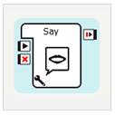
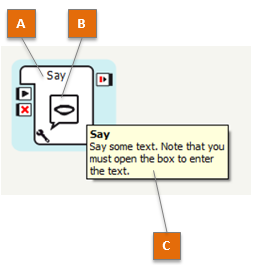
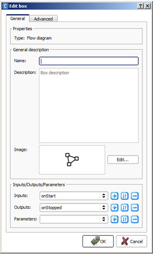
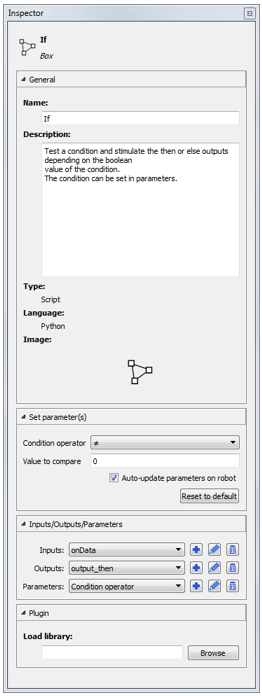
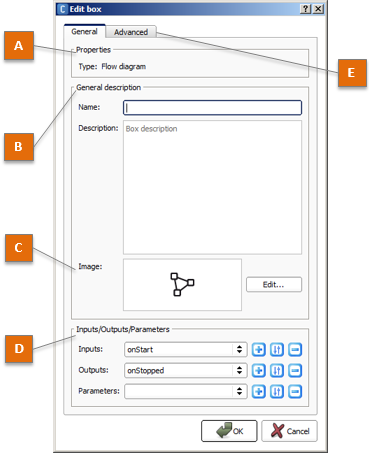

Box¶
What is a box¶
A Box is the basic element of the Behaviors.
{kind=link}
A Box may contain a simple elementary action (Say box for example), as well as a very complex application (room exploration for example).
To go further:
- Ready-to-use boxes are available in the Box libraries panel.
- To create your own box, see: How to create a new box.
- See more details about the box identity, content, and connectors and parameters.
Box identity¶
{kind=link}
The table below describes the properties allowing you to identify a Box.
| Part | Name | Description |
|---|---|---|
| A | Name | Name of the box. |
| B | Image | A specific image helps to understand the box type or content. |
| C | Description | Displays the description of the box and some tips. Appears when holding the pointer over the box and also at the bottom of the Box libraries panel. |
Box content¶
The content of a box depend on its type:
- a Python box contains a Python script,
- a Flow diagram box contains a Flow diagram,
- a Timeline box contains a Timeline.
- a Dialog box refers to a Dialog topic
How to display the content of a box¶
To display the content of a box, double click the box.
Note
A Dialog box acts as a shortcut to the Dialog topic it refers to. If you double-click the box, you will edit the dialog topic. Other boxes referring to that topic will be impacted.
Box connectors and parameters¶
{kind=link}
The table below describes the main connectors of a Box:
| Part | Name | Description |
|---|---|---|
| A | Inputs | Receive events in order to start or stop the box. |
| B | Outputs | Send events and/or data during box execution or when the box execution is stopped. |
| C | Parameters | Receive data used by the box. |
How to create a new box¶
To create a box:
| Step | Action |
|---|---|
| Right click on the Flow diagram wherever you want to create the box. | |
In the contextual menu, under the Create a new box section, choose the type of the box you want to create.  |
|
Optional If you choosed to create a Dialog box, you must choose the dialog topic used by the box. Note The box name is automatically generated from the chosen topic, unless you modify it by hand. Note You can also create a new dialog topic directly from here. |
|
| Define a Name and a Description for your box. | |
| Optional: set the picture to recognize it among other boxes. | |
Optional: set Parameters, Inputs and Outputs. For further details about parameters, see: How to add/remove inputs, outputs, parameters in a box. |
|
Click the OK button. The created box is displayed on the diagram. |
{kind=link}
Editing a Box¶
The Inspector panel gives you a quick access to all the information and properties of any Box.
Click on a Box, to display and edit:
|
 |
Edit Box widget¶
When you edit or create a Box, the following widget is displayed:
{kind=link}
The table below describes the Edit Box widget:
| Part | Name | Allows you to ... | ||||||||
|---|---|---|---|---|---|---|---|---|---|---|
| A | Box properties | Show some box properties:
|
||||||||
| B | General description | Define the Box identity:
|
||||||||
| C | Image | Specify an image. Click the Edit button and select one or several image(s). Note You can choose several images to have a complete graphical description of what it does. But you should know that only the first image is displayed beside the box name in a box library. |
||||||||
| D | Connectors and Parameters | Define the Box connectors and parameters.
|
||||||||
| E | Advanced | Add a Plugin to the box. It is an advanced feature allowing you to add a control the frontage of the box. |